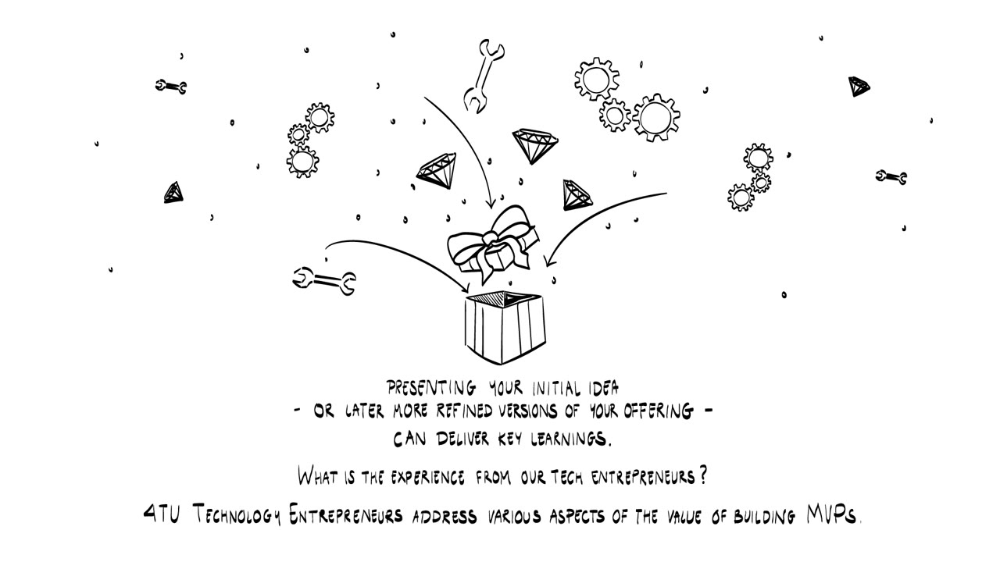
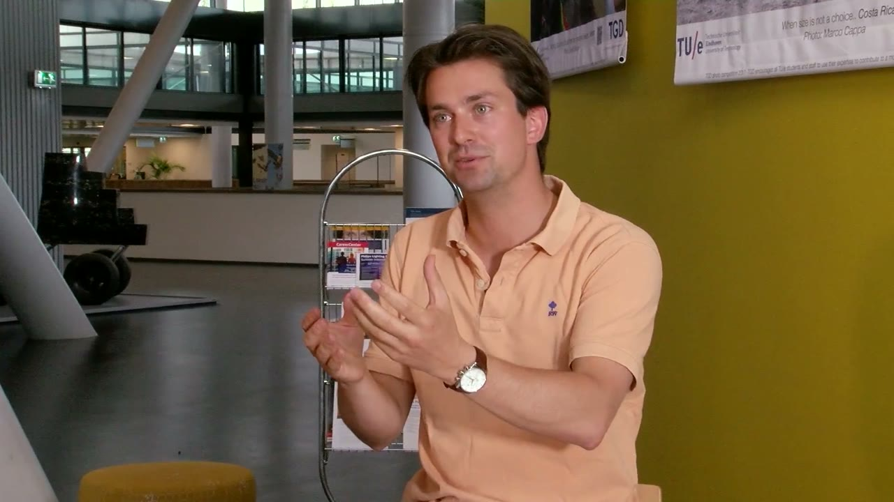
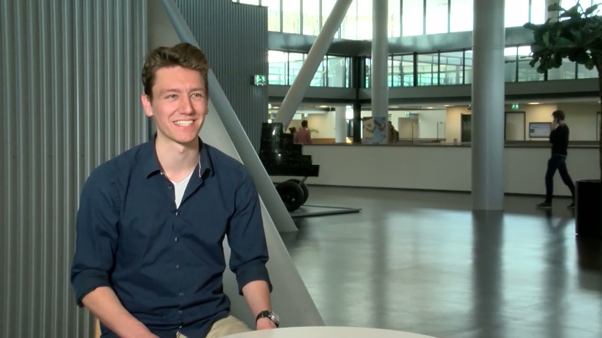
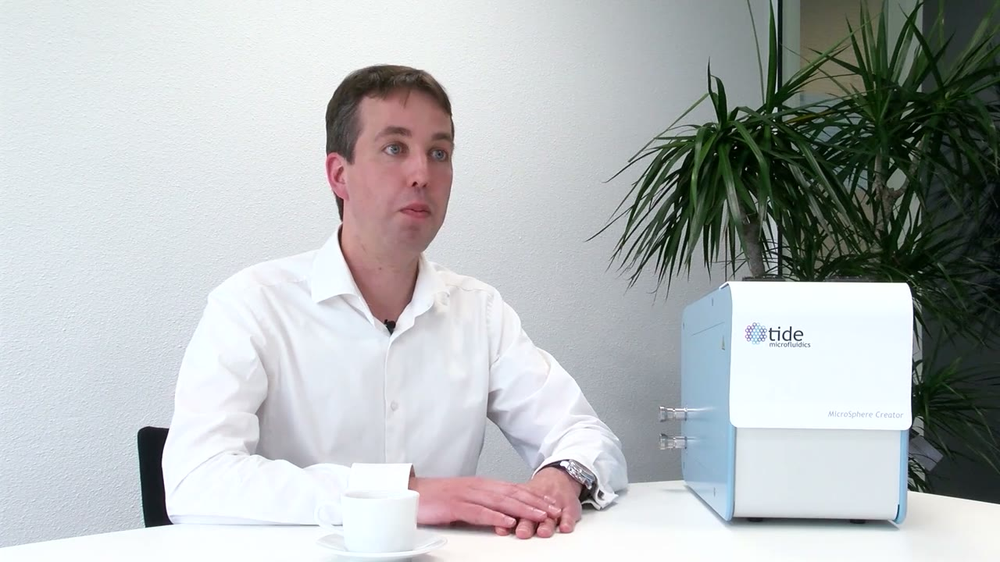
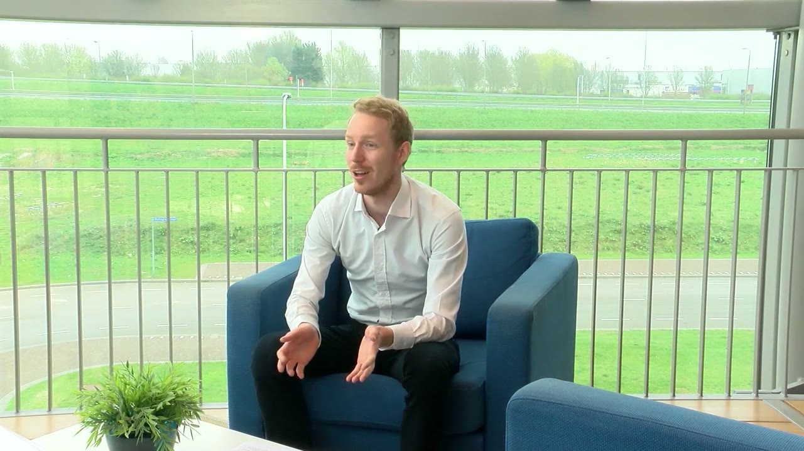
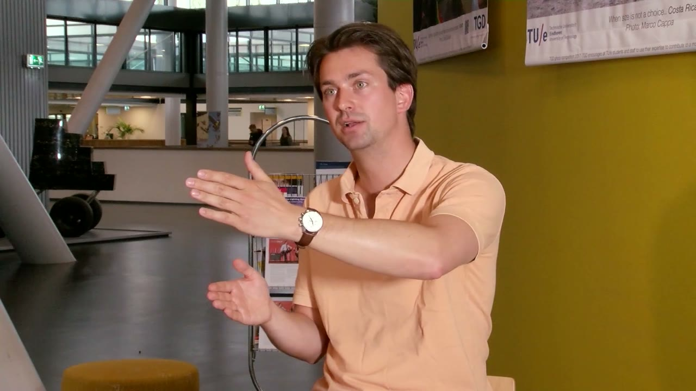
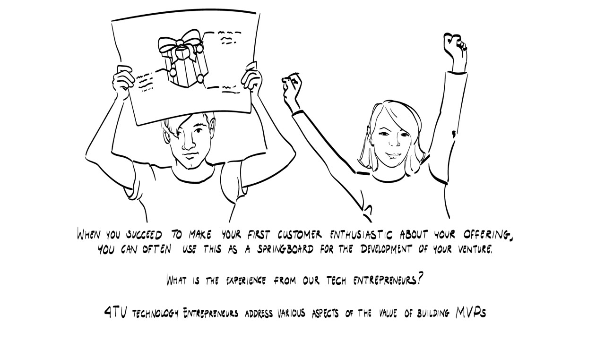
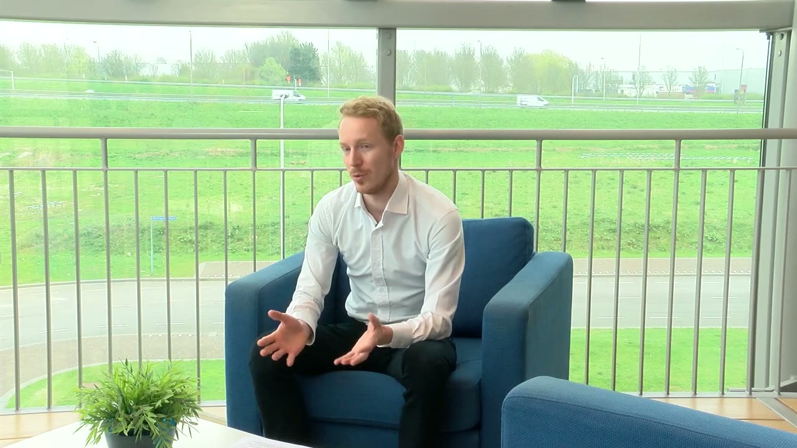
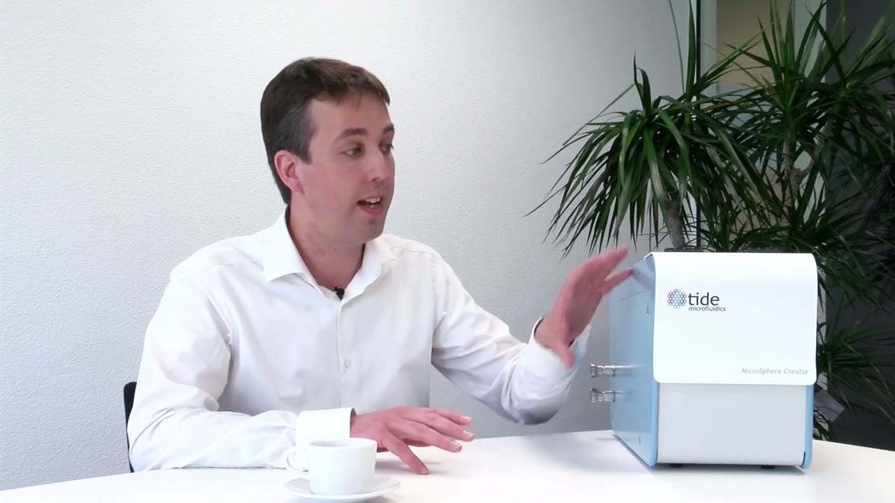

Who is speaking
The video opens with the idea that presenting your initial idea, or later and more refined versions of your offering, can deliver important learnings. Four 4TU technology entrepreneurs then talk about the value of building MVPs. The same four companies appear in both parts.
- Henk ArntzFounder of Snocom (TU Eindhoven). Builds a snow compression machine for airports.
- Ruben van VreelandCo-founder of Bitsensor (TU Eindhoven). Security software.
- Tide MicrofluidicsTU Twente venture. A medical product for ultrasound imaging.
- NowiTU Delft venture. Sensors powered by existing communication signals.


Snocom: a sketch shown to Schiphol
Henk Arntz started in the airport market, with a sketch of a machine that could take up all the snow from one runway. It looked like a good idea, but the market should confirm whether it was. So Arntz approached Amsterdam Airport Schiphol with the sketch and asked whether it would help them.
They had never heard of snow compression, and they found it interesting. Then they asked the practical questions an airport faces. How do you get the machine on and off the runway? Who steers it?


Arntz points out that the simple sketch showed two things at once: a technology, compressing snow, and a product, a machine for runways. Schiphol's feedback was that the technology was good and the product envisioned for the runways was not. They suggested using the technology in another part of the airport, for example the gate area, where passengers get on and off. That shifted Arntz's focus to where the problem is biggest.
And that feedback determined a lot. It shaped my product.
Bitsensor: fake it before you build it
I think every engineer should fake it before they even build a product. So first you do the numbers and then you build a fake product and then you build a prototype.
Van Vreeland sees a lot of engineers build a prototype first, without knowing how big the business is or whether there are customers at all. If nobody wants the prototype, all the time that went into it is wasted. The advice is to start with a PowerPoint, maybe.


The same happens with code. Engineers say they have built the best code and so many tests, and then it is a feature nobody uses and it gets thrown away. If the company does not work out, everything is thrown away. So early on Bitsensor built a culture in which you first make a really tiny version of a feature. It is small and unstable, which Van Vreeland says is not common in security. Then they look at whether people use it.
Hacker profiles were one such feature. People found them interesting, but they interacted with them in a very different way than expected. Bitsensor is now spending several weeks to optimize the functionality and bring it into the product as a stable feature. They build features this way continuously.
Timing is part of it too. Sometimes a feature is needed, but the paying customer for it will only arrive in six months. Then you plan to start five months from now, build it in one month, and have it ready when you sell it. Holding work back like this, Van Vreeland adds, leaves you time to sleep.
Tide Microfluidics: a foam model in the hospital
The tool at Tide Microfluidics is interviewing people. The team goes to the hospital with models of the product made out of foam. They hand one to the end user and ask: where would you put our product? The user looks around and places it in the corner of the ultrasound room.
Then the team checks where the power socket is, which tells them how long the cable should be. They also check where the refrigerator is, because part of what the product works with is stored there. All of this tells them a lot about what the product should look like.


Nowi: a dead end that became a pivot
Nowi now uses Wi-Fi, 4G and GSM signals, communication signals that already exist, as a power source. That is not where it started. The team first built its own box that sent out radio frequency signals. As it turned out, such a box disturbs existing signals a lot. That brings a ton of regulation problems, and regulation is something you cannot change.
For a time they thought the road was a dead end: they would never be able to put boxes everywhere that disturb what is already there. Then they realized that these boxes already exist. They are called Wi-Fi routers and telecom towers. Nowi pivoted to using those.


Snocom: a prototype and no snow
Arntz calls this the most critical point of the last years. The second prototype was engineered, built and taken to the Finnish Arctic Circle, close to the Russian border. The idea was that it snows there so often that the prototype could always be tested and demonstrated to the potential customer.
Arntz was there for two months, February and March, and not a single snowflake fell. There was a fallback: it is always so cold there that you can drive over the lakes and use the old snow. That winter it was so warm that the ice was 40 centimeters thick, and it takes 50 to drive over the lakes safely.


Several things came together. The prototype was built in such a way that it took a long time to assemble and get ready for testing. The location was very remote. And the funding only ran until the end of the testing period, in April. At the end of the winter everything went back in a container, with the goals not reached.
I didn't want to go bankrupt on the Finnish Arctic Circle near the Russian border.
What Arntz took from it
If you have a budget to reach your goals, always think about what could seriously jeopardize them. Make your plan so that whatever happens, you can still think of a way to reach the goal. That covers the whole spectrum: your funding, your prototype and your customer. For this demo, Amsterdam Airport Schiphol would have had to travel two days each way, four days in total, to see a working prototype. It was not the best location for a demo in the first place.
For the next prototype versions Arntz wanted to be more flexible, to combine market and funding better, and to organize the engineering of the prototype better.
What convinces a customer
Nowi has a demo that shows what the technology does. More important than the demo, the entrepreneur thinks, is the business case. Customers do want some proof of principle that what Nowi says works and makes sense. What convinces them most is seeing how this will save them money and how it will be better than what they do right now.
Tide Microfluidics has always aimed at the clinical market. To get there you have to demonstrate that your product is safe, that there is a clear medical need, and that you can make better ultrasound images. For that you need data. You need people who have used your system, who validate it, and who have shown that the product is superior to others in the field. With the system available, third parties can gather that data and share it with the company. This helps Tide move from the preclinical market to the clinical market.
Part two: first customers as a springboard
When you succeed in making your first customers enthusiastic about your offering, you can often use this as a springboard for the development of your venture. The same four entrepreneurs describe how that went for them.


Go to the market with your first sketch
For Arntz, feedback from the market about whether your idea is good is the most important thing you can get when you engineer or invent something. It tells you whether you are doing a good job, which is always good to know personally. It also guides you in making your product and your company better. That feedback came with the very first step, the sketch presented to Schiphol.
If you make your first sketch, go to the market straight away, get feedback. And if that's positive, file a patent.
One demonstration leads to the next
A first successful demonstration, or a first use at a customer, is always a bridge to the next demonstration or the next customer. So during a demonstration or a period of use at their airport, give your customer the best attention you can. If you see that the next one is going to happen, you know that you need to make more products and that you need more people. Paying close attention to your customer tells you what will happen afterwards and how to tackle the challenges that come with it.
Nowi: paid pilots and a funnel
In its very first phase Nowi funded itself through pilot projects. The team built initial prototypes and ran tests with different companies to see how the prototypes behaved. These were very rough. They were not good at all, and they did not provide much value to the company testing them, because they were too early stage for that.
Even so, in some industries companies were willing to pay for a really rough first prototype. They only did that because they could see where it was heading and that it would be useful for them. For Nowi this was also a way to test where the traction is.
The steps towards deployment
At the end of the video (14:00) the Nowi entrepreneur describes what is basically a sales funnel:
- first interviews or conversations with the company,
- a feasibility study, to see whether it is realistic to do this in their use cases and their business,
- a test or pilot project that shows in practice that it works and benefits them,
- deployment.


Tide Microfluidics: customers as ambassadors
The most critical question in developing the product was how to bring it to the medical field. A medical product is not easy to bring to market. It takes a lot of time and a lot of investment. Tide identified a route in which it first developed a product for the research and preclinical markets.
That was a big decision. It required a lot of investment, the product had to be good enough to sell, and resources were limited. Because the people they had been talking to responded so well, they took the step. It worked out: they sold their first products at a very early phase.
We could actually sell our products before we had developed them.
So they had paying customers and very positive feedback, and that fed into the product. Researchers now use it, mostly in Europe and also in America, and these researchers are the company's ambassadors. At the time the team wondered how they would ever reach the medical market. Now they see that their first customers help them get there faster.


Terms to know
- Fake product
- Van Vreeland's step between doing the numbers and building a prototype. It can be as little as a PowerPoint, and it shows whether anyone wants the thing before you spend time building it.
- Pivot
- Changing course when a road turns out to be a dead end. Nowi pivoted from its own signal box to the Wi-Fi routers and telecom towers that already exist.
- Proof of principle
- Evidence that what you claim works and makes sense. Nowi's customers want to see it next to the business case.
- Pilot project
- A test with a customer that shows in practice that the product works and benefits them. Nowi's early pilots were paid, which also showed where the traction was.
- Feasibility study
- The step before a pilot in Nowi's funnel: checking whether it is realistic to apply the technology in the customer's use cases and business.